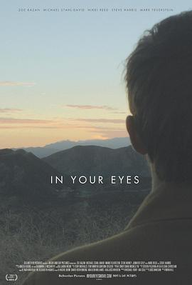

你眼中的世界 / In Your Eyes
又名：烈眼焚情 / 在你眼中
小清新片子，甜到腻，男主颜好棒啊，演个保释犯也满眼纯真的
作品信息
| 导演 | 布林·希尔 |
| 编剧 | 乔斯·韦登 |
| 主演 | 迈克尔·斯塔尔-大卫 / 佐伊·卡赞 / 妮基·瑞德 / 詹妮弗·格雷 / 史蒂夫·豪威 / 马克·费厄斯坦 / 克莱斯·威廉斯 / 理查德·雷西尔 / 史蒂夫·哈里斯 / 普雷斯顿·贝里 / 利兹·斯托贝尔 / 里德·伯尼 / 斯蒂芬·泰勒 |
| 类型 | 剧情 / 爱情 / 奇幻 |
| 制片国家/地区 | 美国 |
| 语言 | 英语 |
| 上映日期 | 2014-04-20(翠贝卡电影节) |
| 片长 | 105分钟 |
| IMDb | tt2101569 |
最后一次看到是 2026-08-12T21:13:00+08:00 · 豆瓣原页